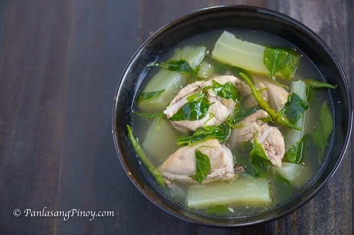

Tinolang Manok

Nothing beats this.
Recipe from allrecipes.com
Ingredients
- Chicken
- Chicken broth
- Bok choy
- Ginger
- Sayote
- Garlic
- Toyo
- Kangkong
Steps
- Sautee the aromatics.
- Add the chicken. Cook until brown.
- Add the water and broth. Boil for 40 to 45 minutes.
- Once the chicken is tender, add the sayote. And other vegetables.
- Season to taste.
- Serve.